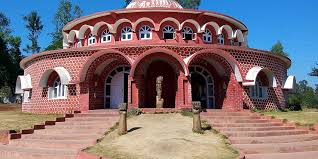
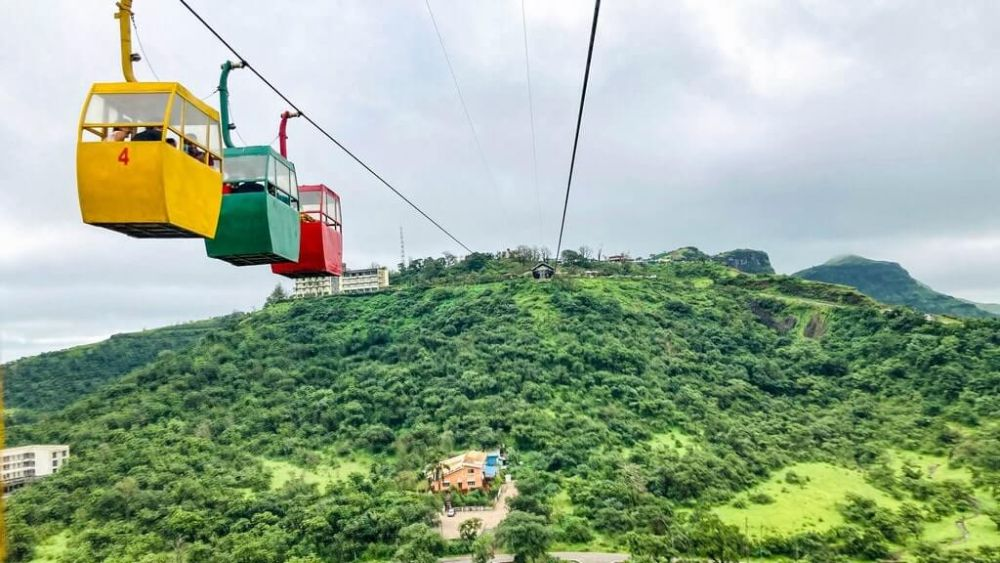
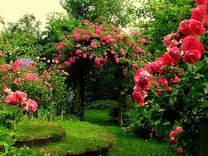

Saputara Lake: The Heart of Saputara
Saputara Lake is a serene lake surrounded by lush hills, offering a perfect spot for relaxation and boating.
Fun Fact:
~It’s an artificial lake created to enhance the beauty of the hill station!
Things to Explore at Saputara Lake:
-
Boating:
Enjoy paddle boating or row boating on the tranquil waters!
-
Lakeside Walk:
Take a leisurely walk along the lakeside and enjoy the scenic views!
-
Picnic Spots:
Relax at designated picnic spots around the lake!
-
Local Cuisine:
Savor delicious local snacks available at nearby stalls!
-
Photography:
Capture stunning photographs of the lake and surrounding hills!
Why Visit Saputara Lake?
!Because it’s a peaceful retreat amidst nature, perfect for unwinding and enjoying the beauty of the hills!

Saputara Tribal Museum: A Glimpse into Tribal Heritage
The Saputara Tribal Museum showcases the rich cultural heritage of the tribal communities in the region.
Fun Fact:
~It’s one of the few museums dedicated to tribal culture in Gujarat!
Things to Explore at Saputara Tribal Museum:
-
Artifacts:
Discover traditional artifacts, tools, and crafts of the tribal communities!
-
Cultural Exhibits:
Learn about the customs, traditions, and lifestyle of the local tribes!
-
Guided Tours:
Join guided tours to gain deeper insights into tribal culture!
-
Workshops:
Participate in workshops to learn traditional crafts and skills!
-
Photography:
Capture unique photographs of tribal artifacts and exhibits!
Why Visit Saputara Tribal Museum?
!Because it’s a unique opportunity to explore and appreciate the rich tribal heritage of Gujarat!

Saputara Ropeway: A Thrilling Experience
The Saputara Ropeway offers a thrilling ride with panoramic views of the surrounding hills and valleys.
Fun Fact:
~It’s one of the highest ropeways in Gujarat, providing breathtaking views!
Things to Explore at Saputara Ropeway:
-
Scenic Views:
Enjoy stunning views of the Western Ghats during the ride!
-
Photography:
Capture breathtaking photographs from the cable car!
-
Hilltop Attractions:
Explore attractions at the hilltop, including viewpoints and gardens!
-
Local Snacks:
Savor local snacks available at the hilltop stalls!
-
Adventure Activities:
Engage in adventure activities available at the hilltop!
Why Visit Saputara Ropeway?
!Because it’s an exhilarating experience that offers a unique perspective of the beautiful hill station!

Saputara Gardens: A Floral Paradise
The gardens in Saputara are beautifully landscaped, offering a serene environment to relax and enjoy nature.
Fun Fact:
~The gardens are home to a variety of exotic flowers and plants!
Things to Explore at Saputara Gardens:
-
Flower Beds:
Admire the vibrant flower beds and lush greenery!
-
Walking Trails:
Stroll through well-maintained walking trails amidst nature!
-
Picnic Areas:
Relax at designated picnic spots surrounded by flowers!
-
Local Flora:
Learn about the diverse flora of the Western Ghats!
-
Photography:
Capture stunning photographs of the gardens and flowers!
Why Visit Saputara Gardens?
!Because it’s a perfect place to unwind, surrounded by the beauty of nature and vibrant flowers!